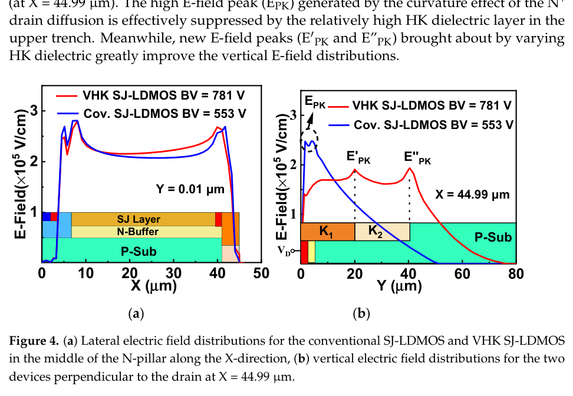

Paper brief
A TCAD Study on High-Voltage Superjunction LDMOS with Variable-K Dielectric Trench
Micromachines, 13(6) · 843
A variable-K dielectric trench modulates the bulk electric field of SJ-LDMOS to improve breakdown voltage while maintaining conduction and thermal behavior.
Research question
Conventional SJ-LDMOS suffers from drain curvature effects and non-uniform bulk electric fields, causing BV saturation in long drift regions.
Method
The device introduces a VHK dielectric trench under the N+ drain. The upper high-K region suppresses drain-side E-field peaks through dielectric RESURF, while the lower-K region expands substrate depletion and redistributes vertical bulk fields.
Technical route
- E-field bottleneck
Identify BV saturation caused by drain and bulk field peaks.
- VHK trench
Design a drain-side trench with different K values along depth.
- Field modulation
Use dielectric RESURF and vertical field redistribution to increase BV.
- Device check
Evaluate conduction, thermal behavior, and fabrication feasibility.
Evidence
- BV gain
- +41.2%
Blocking voltage per drift length compared with conventional SJ-LDMOS.
- Uniform-K comparison
- +9.5%
BV improvement over uniform-K SJ-LDMOS.
- Design object
- VHK trench
Variable-K trench modulates vertical bulk E-field.

Variable-K LDMOS Structure
The structure diagram shows the location and key geometry of high-k trenches in SJ-LDMOS.
It quickly explains what the variable-K design changes relative to conventional structures.
© 2022 the authors. CC BY 4.0. Source: Micromachines. Source.

Bulk Electric-Field Modulation Mechanism
The figure compares electric-field profiles and shows how the high-k region modulates peak fields.
This is the physical core of the paper: improving breakdown capability through field redistribution.
© 2022 the authors. CC BY 4.0. Source: Micromachines. Source.


BV and Electric-Field Trade-Off
The results summarize how structural parameters affect breakdown voltage, field distribution and device performance.
This helps readers understand the trade-off among breakdown, on-resistance and thermal behavior.
© 2022 the authors. CC BY 4.0. Source: Micromachines. Source.
Takeaway & limitations
Varying dielectric permittivity along trench depth reshapes the vertical bulk electric field and improves BV.
It shows an interpretable device-design route: modulate electric fields through dielectric engineering to optimize high-voltage power devices.
- Uses a variable-K trench to modulate the vertical bulk E-field of SJ-LDMOS.
- Improves blocking voltage per drift length by 41.2% and BV over uniform-K by about 9.5%.
- Discusses dielectric range, conduction, thermal behavior, and process feasibility.
This is a foundational device-physics paper for understanding later ML-assisted device modeling work.
Citation
Zhen Cao, Qi Sun, Hongwei Zhang, Qian Wang, Chuanfeng Ma, and Licheng Jiao. A TCAD Study on High-Voltage Superjunction LDMOS with Variable-K Dielectric Trench. Micromachines, 2022, 843.
Download BibTeX